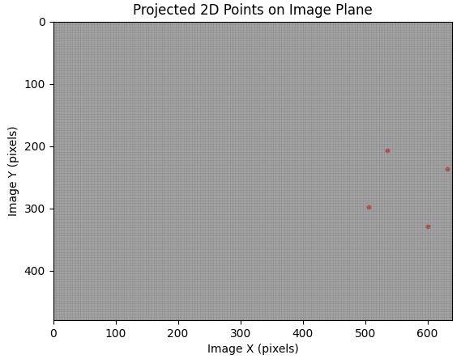

visualize_projected_point_cloud#
- Camera.visualize_projected_point_cloud(point_cloud, points_color='black', points_size=5, points_opacity=1.0, image=None, clip_sensor=True, show_pixel_grid=False, title=None)[source]#
Visualize the projected 2D points of a
pysdic.geometry.PointCloud3Don a 2D plot using matplotlib.See also
project_points()to project 3D points to 2D image points.visualize_projected_mesh()to visualize projected 3D meshes.pysdic.geometry.PointCloud3Dfor the structure of the input.Package matplotlib for visualization.
- Parameters:
point_cloud (PointCloud3D) – An instance of PointCloud3D containing the 3D points in the world coordinate system to be projected and visualized.
points_color (str, optional) – The color of the projected points in the plot. Default is “black”.
points_size (int, optional) – The size of the projected points in the plot. Default is 5.
points_opacity (float, optional) – The opacity of the projected points in the plot. Default is 1.0 (fully opaque).
image (Optional[Union[numpy.ndarray, Image]], optional) – An optional background image to display behind the projected points. If provided, the image should have dimensions matching the camera sensor size. Default is None.
clip_sensor (bool, optional) – If True, only the points that are projected within the camera sensor dimensions are visualized. Default is True.
show_pixel_grid (bool, optional) – If True, a grid representing the pixel layout of the camera sensor is displayed in the background. Default is False.
title (Optional[str], optional) – An optional title for the plot. Default is None with eefault title ‘Projected Points on Image Plane’.
- Return type:
None
Examples
Visualize a projected point cloud using a simple camera:
import numpy from pysdic.imaging import Camera from pycvcam import Cv2Extrinsic, Cv2Intrinsic from pysdic.geometry import PointCloud3D rotation_vector = numpy.array([0.1, 0.2, 0.3]) translation_vector = numpy.array([12.0, 34.0, 56.0]) extrinsic = Cv2Extrinsic.from_rt(rotation_vector, translation_vector) intrinsic = Cv2Intrinsic.from_matrix( numpy.array([[1000, 0, 320], [0, 1000, 240], [0, 0, 1]]) ) camera = Camera( sensor_height=480, sensor_width=640, intrinsic=intrinsic, extrinsic=extrinsic, ) # Define some 3D world points in a PointCloud3D instance world_points_array = numpy.array([ [0, 0, 1000], [100, 0, 1000], [0, 100, 1000], [100, 100, 1000] ]) world_points = PointCloud3D(points=world_points_array) # Visualize the projected point cloud camera.visualize_projected_point_cloud(point_cloud=world_points, points_color="red", points_size=10, show_pixel_grid=True)

Example of projected point cloud visualization. This figure shows the 2D projection of the 3D points onto the image plane.#
{kind=link}